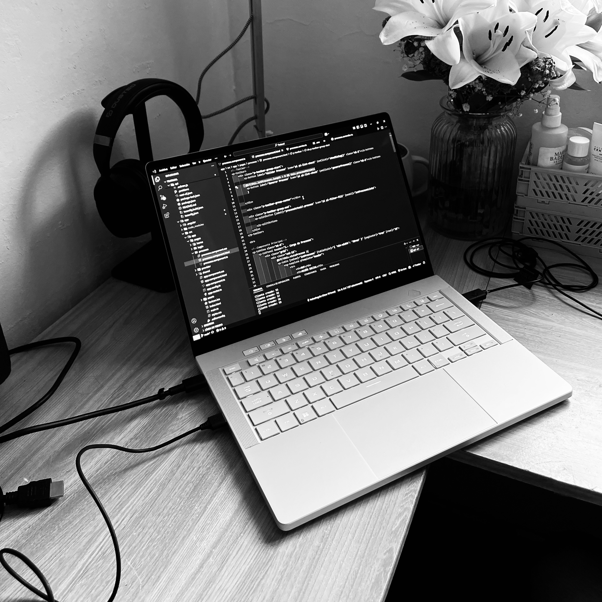

Soy un desarrollador front-end junior apasionado por crear experiencias digitales intuitivas y funcionales. Recientemente completé mi carrera de Analista Programador en DuocUC sede Plaza Oeste, donde desarrollé una sólida base técnica que actualmente aplico en mi rol como pasante en IBM.
Durante estos 5 meses en IBM, me he especializado en el desarrollo de componentes reutilizables y microfrontends responsivos, trabajando principalmente con Angular y Tailwind CSS. Esta experiencia me ha permitido no solo perfeccionar mis habilidades técnicas, sino también comprender la importancia del código limpio, escalable y mantenible en entornos empresariales.
Busco oportunidades para seguir creciendo profesionalmente y contribuir a proyectos innovadores que marquen la diferencia en la industria tecnológica.
